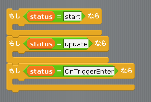

Scratch is developed by the Lifelong Kindergarten Group at the MIT Media Lab. See http://scratch.mit.edu
イベント
「メソッド」のページで書いたように、Scratch 1.4 にはメソッドの概念が無いのでそのままでは「イベントメソッド」を扱うことが出来ません。
そこで scratch2unity では図1の様に「もし〜なら」ブロックでイベントメソッドを表すことにしています。
図1: イベントメソッド

なお scratch2unity で用意しているイベントメソッドは表1に示す3つです。
それぞれのメソッドは図1における「もし〜なら」ブロックと対応していて、例えば「Update イベント」に対するゲームオブジェクトの動作は「もし status = update なら」ブロック内に記述します。
表1: scratch2unity のイベントメソッド
Start メソッド : Start イベントが起きた時に呼び出されるメソッドで、初期化のために使う
Update メソッド : Update イベントが起きた時に呼び出されるメソッドで、ゲームオブジェクトを動かすために使う
OnCollisionEnter メソッド : CollisionEnter イベントが起きた時に呼び出されるメソッドで、当たり判定のために使う